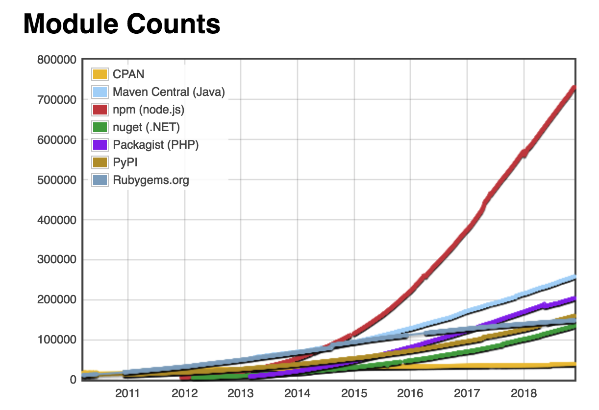

本文输出Node中和包管理有关的基本内容，即npm的使用。
1.0 简单介绍 npm 全称Node packAge Manager是Node 官方提供的包管理工具 ，下面列出包管理工具的功能边界。
❏ 注册机制
对于普通开发者而言包管理工具最主要的作用就是下载和安装(Node)包，前端开发中常用的包管理工具还有Bower ，Bower的具体使用可以参考Bower包管理工具的使用 。Node应用开发中类似的包管理工具还有CNPM 以及Yarn 等。
在npm 网站上有数以万计的Node包，具体使用的时候我们可以在命令行窗口中通过执行npm相关的命令来下载和管理需要的(Node)包。npm的相关命令主要涉及包的搜索 、下载&&安装 、卸载 以及更新 等。
2.0 基本命令 **安装**
通常npm工具在安装Node.js环境(Node的安装直接到官网点击下载链接 )的时候会跟随Node一起安装，可以通过在命令行中输入下面的命令来查看安装是否成功。
$ node -v 查看node的版本信息$ npm -v 查看npm的版本信息，也可以使用$npm -version或者$npm --v指令。
技巧 使用$ npm version可以查看更详细的信息。
1 2 3 4 5 6 7 8 9 10 11 12 13 14 15 16 17 18 19 wendingding:npm wendingding$ npm -version 5.5.1 wendingding:npm wendingding$ npm version { npm: '5.5.1' , ares: '1.10.1-DEV' , cldr: '31.0.1' , http_parser: '2.7.0' , icu: '59.1' , modules: '57' , nghttp2: '1.25.0' , node: '8.9.3' , openssl: '1.0.2n' , tz: '2017b' , unicode: '9.0' , uv: '1.15.0' , v8: '6.1.534.48' , zlib: '1.2.11' }
**帮助**
在通过命令行工具来练习和学习的时候，建议总是从工具的帮助指令开始。
$ npm help 查看node的使用帮助，也可以使用$npm -h或者$npm --h指令。
这里列出help指令的执行细节。
1 2 3 4 5 6 7 8 9 10 11 12 13 14 15 16 17 18 19 20 21 22 23 24 25 26 wendingding:~ wendingding$ npm help Usage: npm <command > where <command > is one of: access, adduser, bin, bugs, c, cache, completion, config, ddp, dedupe, deprecate, dist-tag, docs, doctor, edit, explore, get, help , help-search, i, init, install, install-test, it, link, list, ln, login, logout , ls, outdated, owner, pack, ping, prefix, profile, prune, publish, rb, rebuild, repo, restart, root, run, run-script, s, se, search, set , shrinkwrap, star, stars, start, stop, t, team, test , token, tst, un, uninstall, unpublish, unstar, up, update, v, version, view, whoami npm <command > -h quick help on <command > npm -l display full usage info npm help <term> search for help on <term> npm help npm involved overview Specify configs in the ini-formatted file: /Users/文顶顶/.npmrc or on the command line via: npm <command > --key value Config info can be viewed via: npm help config npm@5.5.1 /usr/local /lib/node_modules/npm
通过查看上面的帮助信息，我们可以知道npm的主要命令where <command> is one of下面的列表项以及这些命令的主要使用方式npm <command>。我们可以通过npm <command> -h的方式来学习某个特定命令的使用，下面给出示例。
$ npm init -h 查看init初始化命令的使用方式。$ npm search -h 查看search搜索命令的使用方式。
1 2 3 4 5 6 wendingding:~ wendingding$ npm init -h npm init [--force|-f|--yes|-y] wendingding:~ wendingding$ npm search -h npm search [--long] [search terms ...] aliases: s, se, find
通过命令行执行的结果我们清楚了init初始化指令后面还可以跟--force或--yes等指令，而search搜索指令后面可以跟--long指令(以更详细的方式显示搜索结果)且支持搜索多个关键词。aliases:s , se , find表明search指令可以使用s , se 或者是find来替换，它们的作用是等价的。
**搜索和查看包信息**
我们可以通过下面的搜索命令来搜索和查看Node官方包仓库 中的包信息。
$ npm search xx 搜索指定的包，使用--long可以查看更详细的信息。$ npm view xxxx 查看指定包所使用的package.json文件信息。
1 2 3 4 5 6 7 8 9 10 11 12 13 14 15 16 17 18 19 20 21 22 23 24 25 26 27 28 29 30 31 32 33 34 35 36 37 38 39 40 wendingding:~ wendingding$ npm search jquery NAME | DESCRIPTION | AUTHOR | DATE jquery | JavaScript library… | =dmethvin… | 2018-01-20 jquery-ui | A curated set of… | =scott.gonzalez… | 2016-09-14 ...省略剩下内容 wendingding:~ wendingding$ npm search --long jquery NAME | DESCRIPTION | AUTHOR | DATE jquery | JavaScript library | =dmethvin =mgol | 2018-01-20 | for DOM operations | =scott.gonzalez | | | =timmywil | jquery-ui | A curated set of | =scott.gonzalez | 2016-09-14 | user interface | =jzaefferer | | interactions, | =devongovett | | effects, widgets, | | | and themes built on | | | top of the jQuery | | | JavaScript Library. | | ···省略剩下内容 wendingding:~ wendingding$ npm view jquery { name: 'jquery' , description: 'JavaScript library for DOM operations' , 'dist-tags' : { beta: '3.3.1' , latest: '3.3.1' }, versions: [ '1.5.1' ，···'3.3.1' ] repository: { type : 'git' , url: 'git+https://github.com/jquery/jquery.git' }, readmeFilename: 'README.md' , homepage: 'https://jquery.com' , keywords: [ 'jquery' , 'javascript' , 'browser' , 'library' ], bugs: { url: 'https://github.com/jquery/jquery/issues' }, license: 'MIT' , title: 'jQuery' , version: '3.3.1' , main: 'dist/jquery.js' , dependencies: {}, devDependencies: { ···省略··· } scripts: { ···省略··· } commitplease: { ···省略··· } }
**拓展** 前面列出了以jquery为例执行搜索命令的细节，除使用`$ npm search
`命令来执行搜索外，使 用`$ npm find xx`或`$ npm s xx`或`$ npm se xx`命令也能达到同样的效果。 NPM模块仓库本身提供了一个查询服务Registry，点击跳转查询服务网址 。在这个网址后面跟上模块名，就会得到一个里面保存着该模块所有版本相关信息的JSON对象。譬如访问https://registry.npmjs.org/jquery 就能够获得jquery模块相关的信息(等价于使用$ npm view jquery指令)。
此外，在查询网址模块名的后面，还可以跟上版本号或者标签，用来查询某个具体版本的信息。比如， 访问 https://registry.npmjs.org/jquery/1.6.2 就能够得到jquery模块1.6.2版本相关的信息。在获取的JSON对象中，存在一个dist字段，该字段的tarball属性指向的是该版本压缩包的网址，跳转到这个网址下载压缩包，在本地解压，就能够得到当前模块的源码。
1 2 3 4 dist: { shasum: "01757a4c5beea29e8ae697527c3131abbe997a28" , tarball: "https://registry.npmjs.org/jquery/-/jquery-1.6.2.tgz" }
**初始化**
$ npm init 初始化操作，用于生成描述文件。$ npm init -y 初始化操作，使用默认值自动生成描述文件。
init指令用来生成项目的配置(描述)文件(package.json)。该文件中包含了项目的名称、版本、作者、包依赖关系等信息，每个Npm包都拥有自己的package.json文件。在进行初始化的时候，如果使用-y或者--yes选项那么系统将会使用默认值来自动的生成描述文件。
1 2 3 4 5 6 7 8 9 10 11 12 13 14 15 16 17 18 19 wendingding:npm wendingding$ npm init --yes Wrote to /Users/文顶顶/Desktop/npm/package.json: { "name" : "npm" , "version" : "1.0.0" , "description" : "" , "main" : "index.js" , "dependencies" : { "jquery" : "^3.3.1" }, "devDependencies" : {}, "scripts" : { "test" : "echo \"Error: no test specified\" && exit 1" }, "keywords" : [], "author" : "" , "license" : "ISC" }
列出init初始化命令在使用-y或--yes选项时，从当前目录中提取的默认值填充规则。
1 2 3 4 5 6 7 8 9 10 11 12 - name：当前目录名称 - version：总是为1.0 .0 版本 - description：来自README的信息，或空字符串 "" - main：总是为index.js文件 - scripts：默认情况下会创建一个空test脚本 - keywords：空数组[] - author：空字符串 - license： ISC - bugs：当前目录中的信息（如果存在） - homepage：当前目录中的信息（如果存在） - dependencies：空对象，如果当前目录存在已安装的包则显示。 - devDependencies：空对象。
**包的安装和卸载**
在下载和安装相关Node包的时候，我们可以选择局部安装 或全局安装 ，如果采用了全局安装的策略那么系统中所有的项目均能使用该包。
$ npm install 安装配置文件中列出的所有依赖包。$ npm install less 安装指定的包到当前路径(局部安装)。$ npm install -g less 安装指定的包到全局包安装路径(全局安装)
install命令会将指定的包安装在当前目录下的node_modules子文件夹中，安装好后在当前项目中(如果是node项目)可以通过require来进行加载。-g选项是global全局的意思，表示把指定的包安装在全局包的安装路径中(/usr/local/lib/node_modules)。
下面列出less的安装细节。
1 2 3 4 5 6 7 8 wendingding:npm wendingding$ npm install less + less@3.8.1 added 60 packages in 12.456s wendingding:npm wendingding$ npm install -g less /usr/local /bin/lessc -> /usr/local /lib/node_modules/less/bin/lessc + less@3.8.1 added 60 packages in 2.299s wendingding:npm wendingding$
install 命令同i, isntall, add等命令等价。install 命令的可选参数还有[–save-prod|–save-dev|–save-optional] [–save-exact] [–no-save]等。
1 2 --save 选项在安装包的时候会更新package.json文件的dependencies字段。 --save-dev 选项在安装包的时候会更新package.json文件devDependencies字段(保存包名:版本信息)。
如果我们需要把项目或系统中某些特定的Node模块移除，那么可以使用uninstall命令来卸载，该命令同un, unlink, remove, rm, r等命令等价。
$ npm uninstall less 卸载当前项目中的指定包(局部)。$ npm uninstall -g less 卸载全局包安装路径下指定的包(全局)
下面列出less的卸载细节(如果是要卸载全局安装的包那么请使用-g选项)。
1 2 3 4 5 6 7 8 wendingding:npm wendingding$ npm remove less npm WARN saveError ENOENT:no such file or directory, open '/Users/文顶顶/npm/package.json' npm WARN enoent ENOENT:no such file or directory, open '/Users/文顶顶/npm/package.json' npm WARN npm No description removed 1 package in 0.737s wendingding:npm wendingding$ npm remove -g less removed 60 packages in 0.827s
**更新**
我们可以通过update命令来执行更新操作，在进行更新的时候可以指定包名，也可以通过-g选项来指定要更新全局安装的包，<pkg>指代的是包的名称，譬如jsonfile或者jquery等。
$ npm update 更新当前项目中所有的包。$ npm update -g 更新全局安装路径下所有的包。$ npm update pkg 更新当前项目中安装的指定包。$ npm update -g pkg 更新全局安装路径下安装的指定包。
1 2 3 4 5 6 7 8 9 10 11 12 13 14 15 16 17 18 wendingding:npm wendingding$ npm list /Users/文顶顶/Desktop/npm └── (empty) wendingding:npm wendingding$ npm install jquery@3.1.0 ···省略内容 + jquery@3.1.0 added 1 package in 5.569s wendingding:npm wendingding$ npm update jquery ···省略内容 + jquery@3.3.1 updated 1 package in 0.547s wendingding:npm wendingding$ npm list /Users/文顶顶/Desktop/npm └── jquery@3.3.1
上面的命令行中，我们首先通过$ npm list命令列出当前项目中已经安装的Node模块，然后下载并安装了jQuery框架的3.1.0版本，继而通过$ npm update jquery指令来把jQuery更新到jquery@3.3.1最新版本。update命令也可以使用简写up来替代。
**其它常用命令**
$ npm run 运行script字段定义的命令。
$ npm list 列出当前项目中安装的所有包。
$ npm list -g 列出系统中全局安装的所有包。
$ npm root -g 列出系统中全局安装包的安装路径。
$ npm config get cache 查看本地的缓存目录。
1 2 3 4 5 wendingding:npm wendingding$ npm root -g /usr/local /lib/node_modules wendingding$ npm config get cache /Users/文顶顶/.npm
3.0 番外篇 npm工具最初由Isaac Z. Schlueter (艾萨克·施吕特)开发，完全使用JavaScript实现。作者有说明实现npm项目的初衷，主要是当时考虑到模块管理问题的重要性，又因为其它平台如PHP的PEAR或Perl的CPAN等工具都存在诸多缺陷(点击查看作者实现npm的初衷 )，所以就自己动手实现了。
Isaac Z. Schlueter 简介：npm作者 CEO ，Node.js的前BDFL，Github主页 和个人博客 。
**资料**
npm官网 npm文档 npm源码 npm讨论
截止日前，npm管理的模块(包)总量已经超出70万，下面给出和其他同类型工具的横向对比(数据来源 )。
